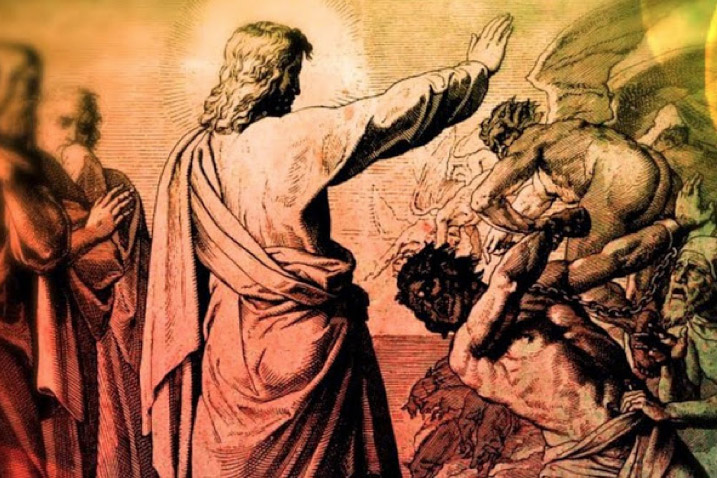

Leitura Orante
Leituras do Dia
Terça-feira da 22ª Semana do
Tempo Comum
(Verde -Ofício do dia )
1 de setembro de 2020
Leitura Orante do Evangelho
Ouça o áudio da oração e reflexão do padre Francisco das Chagas


Oração do dia
Deus do universo, fonte de todo bem, derramai em nossos corações o vo sso amor e estreitai os laços que nos unem convosco para alimentar em nós o q ue é bom e guardar com solicitude o que nos destes. Por Nosso Senhor Jesus Cristo, Vo sso Filho, na unidade do Espírito Santo.
Leitura: 1 Coríntios 2,10-16
Irmãos, 10o Espírito esquadrinha tudo, mesmo as profundezas de D eus. 11Quem dentre os homens conhece o que se passa no homem, senão o espírito do homem que está nele? Assim também, ninguém conhece o que existe em Deus, a não ser o Espírito de Deu s. 12Nós não recebemos o espírito do mundo, mas recebemos o Espírito que vem de Deus, para que conh eçamos os dons da graça que Deus nos concedeu. 13Desses dons também falamos, não com palavr as ensinadas pela sabedoria humana, mas com a sabedoria aprendida do Espírito: assim, ajustamos uma linguagem espiritual às realidades espirituais. 14 O homem psíquico – o que fica no nível de suas capacidades naturais – não aceita o que é do Espírito de Deus, pois isso lhe parece uma ins ensatez. Ele não é capaz de conhecer o que vem do Espírito, porque tudo isso só pode ser julgado com a ajuda do mesmo Espírito. 15Ao contrário, o homem espiritual – enriquecido com o dom do Espírito -julga tudo, mas ele mesmo não é julgado por ninguém. 16Com efei to, quem conheceu o pensamento do Senhor, de maneira a poder aconselhá-lo? Nós, porém, temos o pensamento de Cristo. –Palavra do Senhor.
Salmo Responsorial: 144(145)
É justo o Senhor em seus caminhos.
Misericórdia e piedade é o Senhor, ele é amor, é paciência, é compaixão. O Senhor é muito bom para com todos, sua ternura abraça toda criatura.
É justo o Senhor em seus caminhos.
Que vossas obras, ó Senhor, vos glorifiquem, e os vossos santos com louvores vos bendigam! Narrem a glória e o esplendor do vosso reino e saibam proclamar vosso poder!
É justo o Senhor em seus caminhos.
Para espalhar vossos prodígios entre os homens e o fulgor de vosso reino esplendoroso. O vosso reino é um reino para sempre, vosso poder, de geração em geração.
É justo o Senhor em seus caminhos.O Senhor é amor fiel em sua palavra, é santidade em toda obra que ele faz. Ele sustenta todo aquele que vacila e levanta todo aquele que tombou.
É justo o Senhor em seus caminhos.Evangelho: Lucas 4,31-37
Naquele tempo, 31Jesus desceu a Cafarnaum, cidad e da Galileia, e aí ensinava-os aos sábados. 32As pessoas fic avam admiradas com o seu ensinamento, porque Jesus falava com a utoridade. 33Na sinagoga havia um homem possuído pelo espírito de um demônio impuro, que gritou em alta voz: 34“O que queres de nós, Jesus nazareno? Vieste para nos destruir? Eu sei quem tu és: tu és o Santo de Deus!” 35Jesus o ameaçou, dizendo: “C ala-te e sai dele!” Então o demônio lançou o homem no chão, s aiu dele e não lhe fez mal nenhum. 36O espanto se apossou de todos, e eles comentavam entre si: “Que palavra é essa? Ele manda nos espíritos impuros com autoridade e poder, e eles s aem”. 37E a fama de Jesus se e spalhava em todos os lugares da redondeza. – Palavra da Salvação.
Leituras do mês
TAGS
missao Amazonia evengel covid-19 indigenas novica papa francisco
Destaques
Província Stella Matutina
Rua São Benedito, 2146 - Santo Amaro - São Paulo - SP |
Tel. (11) 5547-7222


Província Spiritus Divinae Sapientiae
Rua Arnaldo Janssen, 320 - Cara-Cara - Ponta Grossa - PR |
Tel. (42) 3326 4091